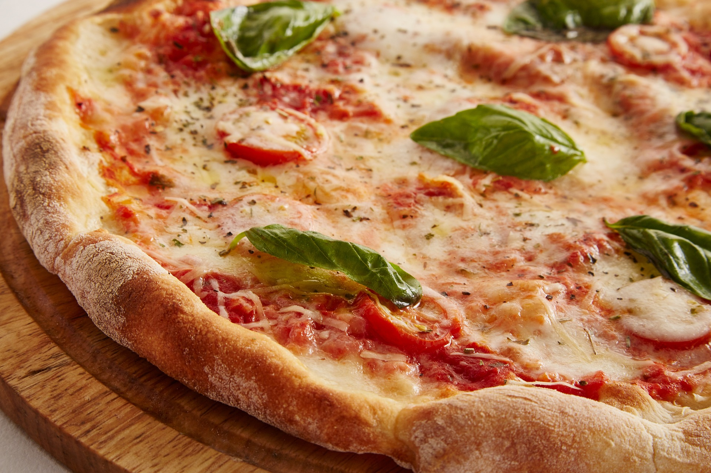

Recettes de l'Italie
Découvrez les délices de la cuisine italienne avec nos recettes traditionnelles et modernes.
Spaghetti alla Carbonara

Description : Un plat classique de la cuisine romaine, les *Spaghetti alla Carbonara* sont composés de pâtes enrobées d'une sauce onctueuse à base de jaune d'œuf, de pecorino romano, de guanciale croustillant et de poivre noir fraîchement moulu.
Ingrédients :
- 400 g de spaghetti
- 150 g de guanciale (ou pancetta en option)
- 4 jaunes d'œuf
- 50 g de pecorino romano, râpé
- Poivre noir fraîchement moulu
- Sel
Instructions :
- Cuire les spaghetti : Faire cuire les spaghetti dans de l'eau bouillante salée jusqu'à ce qu'ils soient *al dente*, en suivant les instructions du paquet. Réserver une tasse d'eau de cuisson des pâtes.
- Préparer la sauce : Dans un bol, mélanger les jaunes d'œuf et le pecorino romano jusqu'à obtenir une crème lisse.
- Cuire le guanciale : Dans une poêle, faire revenir le guanciale jusqu'à ce qu'il soit doré et croustillant. Retirer du feu.
- Assembler : Ajouter les pâtes égouttées dans la poêle avec le guanciale. Retirer la poêle du feu, puis ajouter la crème aux œufs et au fromage en mélangeant rapidement pour obtenir une sauce crémeuse. Ajouter un peu d'eau de cuisson si la sauce est trop épaisse.
- Servir : Saupoudrer généreusement de poivre noir et servir immédiatement avec du pecorino romano râpé.
Risotto alla Milanese

Description : Ce risotto crémeux est aromatisé au safran, lui conférant une belle couleur dorée et un goût unique. Il est originaire de Milan et souvent servi avec de l'osso buco.
Ingrédients :
- 300 g de riz Arborio
- 1,5 litre de bouillon de bœuf chaud
- 1 oignon, finement haché
- 50 g de beurre
- 100 ml de vin blanc sec
- 0,5 g de safran
- 50 g de parmesan râpé
Instructions :
- Préparer le bouillon : Diluer le safran dans le bouillon chaud pour libérer sa couleur et son arôme.
- Cuire l'oignon : Dans une casserole, faire fondre le beurre et ajouter l'oignon jusqu'à ce qu'il soit translucide.
- Ajouter le riz : Ajouter le riz et remuer pour enrober chaque grain. Verser le vin blanc et laisser évaporer.
- Incorporer le bouillon : Ajouter une louche de bouillon à la fois, en remuant jusqu'à absorption avant d'ajouter la suivante. Cuire ainsi pendant 18-20 minutes.
- Servir : Hors du feu, incorporer le parmesan. Assaisonner si nécessaire et servir chaud.
Pizza Margherita

Description : La pizza Margherita est un classique italien garni de sauce tomate, de mozzarella et de basilic frais, créant ainsi les couleurs du drapeau italien.
Ingrédients :
- Pâte à pizza pour 1 grande pizza
- 150 g de sauce tomate
- 150 g de mozzarella fraîche
- Feuilles de basilic frais
- Huile d'olive
- Sel et poivre
Instructions :
- Préchauffer le four : Préchauffer le four à 250 °C (ou plus, si possible).
- Préparer la base : Étaler la pâte à pizza sur une plaque de cuisson farinée. Répartir la sauce tomate en une fine couche.
- Ajouter la mozzarella : Découper la mozzarella en tranches et la répartir uniformément sur la pizza.
- Cuire la pizza : Enfourner et cuire jusqu'à ce que la croûte soit dorée et la mozzarella fondu, environ 10 minutes.
- Garnir et servir : Ajouter les feuilles de basilic et un filet d'huile d'olive avant de servir.
Tiramisu

Description : Ce dessert italien est une combinaison irrésistible de mascarpone, de café, de cacao et de biscuits à la cuillère. Le *Tiramisu* est un dessert onctueux qui se déguste bien frais.
Ingrédients :
- 250 g de mascarpone
- 100 g de sucre
- 3 œufs
- 200 g de biscuits à la cuillère
- 300 ml de café fort, refroidi
- Poudre de cacao non sucré
Instructions :
- Préparer la crème : Séparer les blancs des jaunes d'œufs. Fouetter les jaunes avec le sucre jusqu'à obtenir un mélange pâle. Ajouter le mascarpone et mélanger jusqu'à obtenir une crème lisse.
- Monter les blancs en neige : Battre les blancs en neige ferme et les incorporer délicatement à la crème.
- Assembler : Tremper les biscuits dans le café et les disposer au fond d'un plat. Recouvrir avec une couche de crème. Répéter les couches.
- Réfrigérer : Laisser reposer au réfrigérateur pendant au moins 4 heures.
- Servir : Saupoudrer de cacao juste avant de servir.